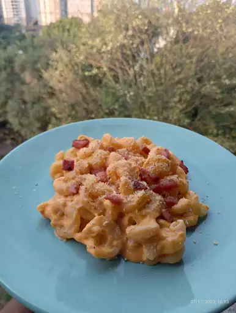

This mac and cheese recipe with a buttered bread crumb topping is creamy and comforting. It's easy to make the cheese sauce from scratch on your stovetop, starting with a roux and adding milk, Cheddar, and Parmesan, resulting in a rich, decadent sauce that coats every nook and cranny of the noodles. Serve this comfort-food macaroni and cheese casserole with grilled meats, sloppy Joes, fried chicken or alongside a salad for a meatless dinner.